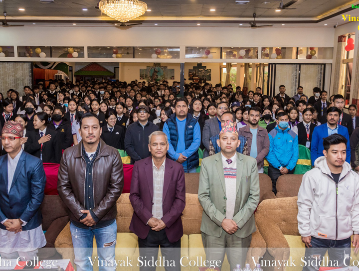

Vinayak Siddha College (VSC) is an institution highly dedicated to higher education suitable for the 21st century. It is founded by a team of experts having prolonged engagement in the educational sector for more than two decades with the motto “Committed for Quality Education”. VSC is well set up in a sound atmosphere and dedicated to disseminating quality education pertaining to the needs and expectations of the digitally savvy era of the 21st century. We, at VSC, open up a new world of choices and opportunities in a world of choices and opportunities through world-class education so that our graduates will be able to make informed decisions for themselves and society as a whole.
Vinayak Siddha College, since its establishment in the year 2013, has been one of the prestigious institutions in the prime location of Chabahil and has been making a prior effort for an excellent academic environment. Realizing the prior challenges and shortcomings in the private sector, VSC always stood for the sake of students and helped students grow personally and professionally
offering holistic and quality education. The academic results have proven that VSC has assured ECAs, CCAs, social awareness programs, cultural programs, student welfare programs, and instilled the right skills and attitude in the students.
A highly academic standard is a priority for our institution, and it is being achieved through a body of well-trained and highly qualified faculty. VSC offers a true learning environment nurtured by the latest innovation and technology. We also offer an excellent education system, quality learning exposure, and technocratic teaching-learning practices. With a sound and strong belief in the multidimensional development of students along with academic achievements, VSC engages students in various participatory learning platforms on a regular basis. More specifically, VSC focuses on task-based learning to ensure a learning environment that is engaging and widely applicable to students with a wide range of interests.
Under Vinayak Siddha Education Foundation, there are 5 well-furnished buildings, more than 1800 students, and 100 employees. VSC is the best private institution serving quality education for the
increasingly competitive era of the 21st century. As a humble beginning, the college has an affiliation to the program namely BBS, BA, and BSW. We will have a full-scale multidisciplinary higher education in a few years ahead. VSC aims to commence BBA, BCA, B. Ed, MA, MBS, M. ED, and other academic programs in the near future.

| Vision | We aim to develop our college into an academic institution where our students from a heterogeneous community can feel the difference and be proud of its academic dignity. |
|---|---|
| Mission | To develop Vinayak Siddha College (VSC) into an acclaimed quest for learning and to develop and deliver innovative education through both physical and technological practice. |
| Approach | We employ a student-centred approach, project-based learning, participatory approach, and genre-based techniques that fit into the globalized era of the 21st century practice. |
{kind=link}